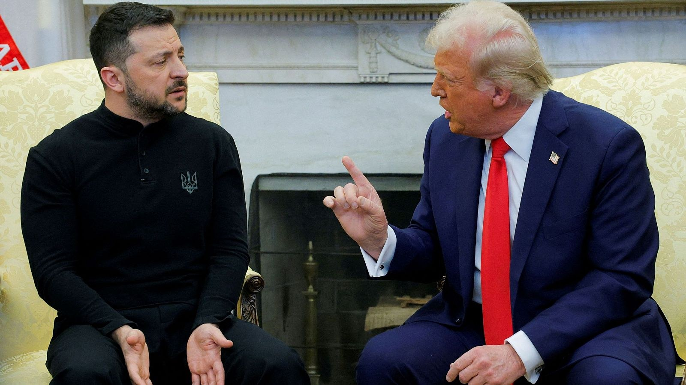

Imagen: Reuters/Brian Snyder
De pronto, pareciera que Zelensky ya tuvo demasiado. No es que no haya intentado distintas rutas para lidiar con el presidente estadounidense, pero, después de casi dos años, ahora está decididamente escalando su retórica contra Trump. En una entrevista para el Financial Times esta semana, Zelensky no solo se muestra desafiante y anuncia que ya ha sido suficiente de una tregua energética que solo Ucrania está respetando, sino que incluso afirma que Trump siente una afinidad instintiva por los “autócratas y las personas extremadamente ricas”. De su lado, Trump también ha dado muestras de su exasperación con el mandatario ucraniano. Hace algunos días, incluso declaró: “Creo que ha llegado el momento de que Ucrania tenga un nuevo presidente… Sugiero que consigan un nuevo líder que pueda llegar a un acuerdo, porque (Zelensky) podría haber llegado a muchos acuerdos y, por alguna razón, nunca lo hace”.
Esta situación pareciera devolvernos a un territorio que ya conocemos, que quedó expuesto a los cuatro vientos cuando ambos líderes chocaron en la Casa Blanca el año pasado, y que pareciera reflejar cómo piensan Trump, su base en EE. UU. e incluso ciertos sectores en Europa respecto a la guerra en Ucrania. Comparto unas notas al respecto.
1. Quizás lo primero es entender que Trump no es solo un líder que habla a su base, sino un líder que habla como su base porque, en muchos sentidos, conecta con ella, piensa como ella y la representa. Entonces, cuando decimos que, según encuestas, el 60% de quienes votaron por Trump en 2024 se oponía a que EE. UU. continuara armando a Ucrania, no se trata de un público al que Trump simplemente quiere satisfacer, sino de un sector político con el que el presidente genuinamente concuerda. Es por eso que su discurso es tan representativo de ese sector.
2. Para ese sector de la población estadounidense y, como dije, para amplios sectores de la población europea, Ucrania no puede ni podrá derrotar a Rusia en la guerra. Es probable que buena parte de estos sectores lamente la invasión rusa y se sienta mal porque Ucrania tenga que perder territorio y soberanía. Pero, desde su perspectiva, Zelensky pudo y debió llegar a acuerdos desde antes de la guerra y, posteriormente, ha tenido oportunidades para detener las hostilidades a lo largo de estos años. Esto habría implicado efectuar concesiones dolorosas, pero necesarias, que de cualquier manera tendrá que hacer al final, dado que, según su lógica, será imposible que Kiev revierta los cálculos de Putin.
3. Pero más allá de lo que decida o no hacer ese país, al final se trata de un problema ucraniano que, por más triste o lamentable que sea, no debiera financiarse indefinidamente con el dinero de los contribuyentes estadounidenses. Por tanto, mientras más se prolongue la guerra, especialmente con la línea del frente prácticamente estancada, e incluso si Ucrania consigue algunas victorias tácticas, más se multiplican las repercusiones globales de un conflicto que perciben como ajeno.
4. Desde su punto de vista, el mayor error de Occidente ha sido ofrecer a Kiev incentivos, como armamento y financiamiento, que alimentan la idea equivocada de que prolongar la guerra le permitirá obtener de Putin más concesiones de las que hoy podría conseguir de manera pragmática y realista.
5. Esta lógica no era nueva en Trump cuando regresó a la Casa Blanca en 2025. Se trata de un sistema de ideas que ya conocíamos y que nos llevó a pensar que el choque entre él y Zelensky era inevitable desde el inicio del nuevo mandato presidencial. La tensión alcanzó su punto máximo no solo con su enfrentamiento de febrero de 2025 ante todas las cámaras, sino también con la decisión de Washington de suspender la colaboración en inteligencia y congelar el envío de armamento a Ucrania inmediatamente después.
6. Sin embargo, la tensión no duró demasiado. Zelensky entendió que necesitaba cambiar urgentemente su tono y su trato con Trump, dada la enorme dependencia de Ucrania respecto a EE. UU. La distensión llegó casi de inmediato: Washington restableció la colaboración en inteligencia, reactivó el suministro de armamento y encontró mecanismos para seguir proveyendo a Ucrania del arsenal que necesitaba, trasladando el costo a sus aliados europeos.
7. Cada vez que Trump anunciaba la reactivación de las negociaciones con Rusia, Zelensky adoptaba una estrategia clara: mostrarse a favor y, aun si no lo estaba, proyectar que Ucrania no sería un obstáculo para las propuestas de Washington. Cuando la situación se volvía más delicada, como ocurrió durante la cumbre Trump-Putin en Alaska en 2025, Zelensky buscaba el respaldo de sus aliados europeos para fortalecer sus posturas, pero siempre tratando de no contrariar a Trump de manera directa.
8. Paralelamente, Ucrania fue muy eficaz durante el último año para cambiar la narrativa sobre su inminente derrota. Sus efectivas tácticas con drones y el impacto de su campaña aérea en la economía, la sociedad y la política rusas llevaron a muchas personas, tanto en EE. UU. como en Europa, a considerar que Ucrania podría negociar desde una posición de mucha mayor fuerza.
9. Esta combinación de factores fue moderando paulatinamente la visión de Trump sobre Zelensky, a quien comenzó a entender como un socio para la paz o, cuando menos, para alcanzar un cese al fuego temporal, algo que, bajo su lógica de proyectar cumplimiento y resultados, era muy importante para el presidente estadounidense.
10. Pero acá hubo otro fenómeno interesante: Putin interpretó el conflicto inicial entre Trump y Zelensky como altamente favorable para sus metas estratégicas y asumió que tenía mucho más margen para maniobrar con el presidente estadounidense del que realmente tenía. Por tanto, el acercamiento de Zelensky con Trump que sobrevino después, también tuvo otro efecto: ahora era Putin quien aparecía como el obstáculo para la paz.
11. En ese contexto, sin embargo, comenzaron a sumarse otros factores que terminarían por alterar nuevamente el escenario. Primero, Trump terminó por desesperarse y dijo que, si las partes deseaban seguir su guerra, él ya no podría detenerlas. Segundo, estalló la guerra en Irán, que no solo acaparó toda su atención, sino que también desgastó sus recursos y su arsenal, además de exhibir múltiples vulnerabilidades de EE. UU. Entre otras consecuencias, esto elevó los precios de la energía y contribuyó al agotamiento de los misiles Patriot, indispensables para la defensa antiaérea de Ucrania.
12. Putin, que estaba pagando altos costos por los ataques ucranianos contra su territorio y su infraestructura, decidió aprovechar lo que percibe como un momento de debilidad estadounidense, de fractura dentro de la OTAN y de alta vulnerabilidad para Ucrania. Así, escaló tanto sus ataques contra ese país como sus tácticas de guerra híbrida (sabotajes, incursiones con drones, ciberataques, entre muchos otros) contra Europa.
13. Ahora, el péndulo vuelve a girar en sentido inverso. Después de tantos meses e intentos fallidos, Trump regresa a sus planteamientos iniciales: Zelensky debería reconocer sus límites y entender que no obtendrá mayores concesiones de Putin escalando sus ataques aéreos contra Rusia. Más aún, desde esta lógica, Ucrania solo ha complicado la situación y provocado mayores escaladas por parte de Moscú. Para colmo, justo cuando los precios de la energía están elevados y sus efectos se hacen sentir en la economía estadounidense en este año electoral, los ataques ucranianos contra la infraestructura energética rusa no hacen sino echar gasolina al fuego.
14. Desde su perspectiva, por tanto, Ucrania necesita otro presidente. Otro tipo de liderazgo quizá ya habría entendido que el país persigue objetivos inalcanzables y que debería capitular con mayor pragmatismo y con los pies sobre la tierra.
Repito: así piensan Trump y su base, y así piensa también un sector importante de las sociedades europeas que va adquiriendo cada vez mayor peso en el mapa electoral. Esta situación, naturalmente, vuelve a poner a Zelensky y Trump en trayectoria de colisión. La cuestión es que la dependencia de Ucrania respecto a EE. UU. sigue siendo altísima, incluso con todo el apoyo que Europa pueda brindarle, especialmente en materia de inteligencia, suministro de municiones de artillería y misiles de defensa. Por tanto, la apuesta de Zelensky al confrontar a Trump es demasiado elevada.
CIPMEX · Centro de Investigación para la Paz México, A.C. · Paz que se piensa, paz que se construye